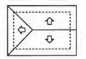

Thomas Edison: “A insatisfação é a principal motivadora do progresso.”
21- A Figura 1 apresenta uma casa e a planta do seu telhado, em que as setas indicam o sentido do escoamento da água de chuva. Um pedreiro precisa fazer a planta do escoamento da água de chuva de um telhado que tem três caídas de água, como apresentado na Figura 2.

A figura que representa a planta do telhado da Figura 2 com o escoamento da água de chuva que o pedreiro precisa fazer é
A)
B) 
C)
D)
E)
No enunciado diz que o telhado é dividido em 3 partes. Com isso, pensaremos na alternativa que mostra a direção do escoamento da água.
A alternativa que representa isso é a da letra B.
GABARITO: LETRA B
22- Uma loja de materiais de construção vende dois tipos de caixas-d’água: tipo A e tipo B. Ambas têm formato cilíndrico e possuem o mesmo volume, e a altura da caixa-d’água do tipo B é igual a 25% da altura da caixa-d’agua do tipo A.
Se R denota o raio da caixa-d’água do tipo A, então o raio da caixa-d'água do tipo B é
A) R/2
B) 2 R
C) 4 R
D) 5 R
D) 16 R
V = πR²h
Esqueçam o pi, pois ele será cancelado logo de primeira e trabalhem apenas com R²h
Se 25% = 1/4, então a altura do cilindro B é h/4
O raio do cilindro B não é igual ao do A, então ele será = X
Se os volumes são iguais, então:
R²h = X²h/4 (O quatro passa para o outro lado multiplicando)
4R²h = X²h (Há h nos dois lados, então eles se cancelam)
X² = 4R² (Extrai-se a raiz quadrada nos dois lados)
X= 2R
GABARITO: LETRA B
23- Pergolado é o nome que se dá a um tipo de cobertura projetada por arquitetos, comumente em praças e jardins, para criar um ambiente para pessoas ou plantas, no qual há uma quebra da quantidade de luz, dependendo da posição do sol. É feito como um estrado de vigas iguais, postas paralelas e perfeitamente em fila, como ilustra a figura.
Um arquiteto projeta um pergolado com vãos de 30 cm de distância entre suas vigas, de modo que, no solstício de verão, a trajetória do sol durante o dia seja realizada num plano perpendicular à direção das vigas, e que o sol da tarde, no momento em que seus raios fizerem 30° com a posição a pino, gere a metade da luz que passa no pergolado ao meio-dia. Para atender à proposta do projeto elaborado pelo arquiteto, as vigas do pergolado devem ser construídas de maneira que a altura, em centímetro, seja a mais próxima possível de:
A) 9
B) 15
C) 26
D) 52
E) 60
A distância entre as vigas é de 30cm e o enunciado nos diz que quando o sol está 30º com a posição a pino gera metade sombra, metade sol no pergolado, ou seja, 15cm de sombra e 15cm de sol. Logo, para saber a altura necessária das vigas para que isso ocorra (metade sombra, metade sol), calculamos:
tg30º = 15 / H (altura)
√3/3 = 15/H
H = 45/√3 x √3/√3 (para racionalizar a fração)
H = 45√3/3
H = 15√3
H = 25,98
GABARITO: LETRA C
24-Uma empresa especializou-se no aluguel de contêineres que são utilizados como unidades comerciais móveis. O modelo padrão alugado pela empresa tem altura de 2,4 m e as outras duas dimensões (largura e comprimento), 3,0 m e 7,0 m, respectivamente.
Um cliente solicitou um contêiner com altura padrão, porém, com largura 40% maior e comprimento 20% menor que as correspondentes medidas do modelo padrão. Para atender às necessidades de mercado, a empresa também disponibiliza um estoque de outros modelos de contêineres, conforme o quadro.
Dos modelos disponíveis, qual atende às necessidades do cliente?
A) I
B) II
C) III
D) IV
E) V
Largura: aumento de 40%
3 metros — 100%
x metros — 140%
x = 4,2 metros
Comprimento: redução de 20%
7 metros — 100%
x metros — 80%
x = 5,6 metros
O tipo II atende todas medidas.
GABARITO: LETRA B
25- Para decorar sua casa, uma pessoa comprou um vaso de vidro em forma de um paralelepípedo retangular, cujas medidas internas são: 40 cm de comprimento, 35 cm de largura e 60 cm de altura. Em seguida, foi até uma floricultura e escolheu uma planta aquática para colocar nesse vaso. Segundo uma proposta do gerente do local, essa pessoa avaliou a possibilidade de enfeitar o vaso colocando uma certa quantidade de pedrinhas artificiais brancas, de volume igual a 100 cm3 cada uma delas, que ficarão totalmente imersas na água que será colocada no vaso. O gerente alertou que seria adequado, em função da planta escolhida, que metade do volume do vaso fosse preenchido com água e que, após as pedrinhas colocadas, a altura da água deveria ficar a 10 cm do topo do vaso, dando um razoável espaço para o crescimento da planta. A pessoa aceitou as sugestões apresentadas, adquirindo, além da planta, uma quantidade mínima de pedrinhas, satisfazendo as indicações do gerente.
Nas condições apresentadas, a quantidade de pedrinhas compradas foi:
A) 140.
B) 280.
C) 350.
D) 420.
E) 700.
O primeiro passo é tirarmos o volume total do vaso:
V = 40 * 35 * 60
V = 84000 cm³
O segundo passo é vermos qual será a metade desse volume:
84000 / 2 = 42000 cm³
Essa metade é apenas de água.
O terceiro passo é vermos quanto que fica o volume 10 cm do topo do vaso (ou seja, a altura reduzida de 60 para 50):
V = 40 * 35 * 50
V = 70000 cm³
O quarto passo é tirarmos a diferença do volume que deve ser de água para o volume a 10 cm do topo. A diferença será o volume que as pedrinhas ocuparão:
70000 cm³ - 42000 cm³ = 28000 cm³
O último passo é fazer uma regra de três:
1 pedrinha — 100 cm³
x pedrinhas — 28000 cm³
x = 280
GABARITO: LETRA B